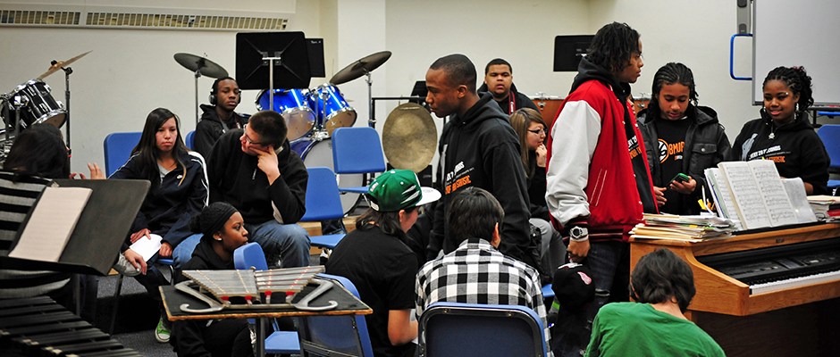
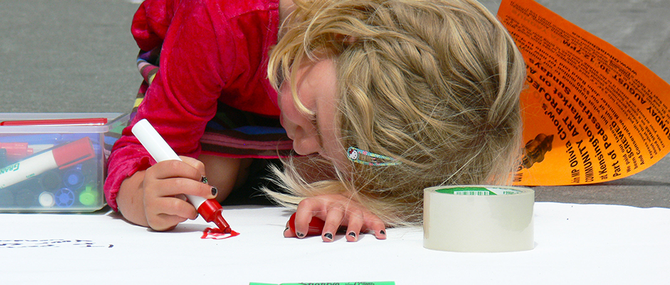
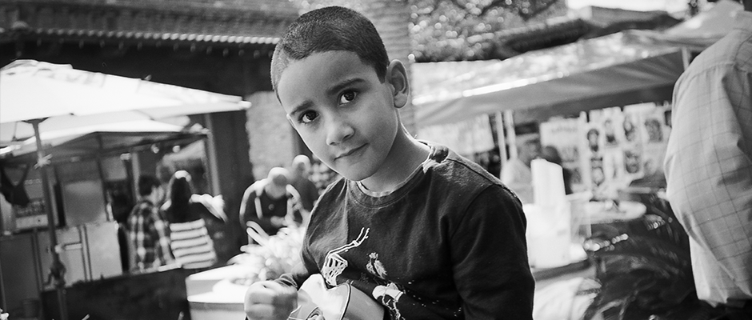

Art Start nurtures the voices, hearts and minds of New York City's marginalized youth for the purpose of personal development through consistent, creative workshops inside homeless shelters, alternative to incarceration programs, and partnering youth agencies.
Over the past twenty years, Art Start has become an award-winning, nationally recognized model for using the creative arts to transform young, at-risk lives. Art Start kids live in city shelters, on the streets, are involved in court cases, or surviving with parents in crisis. Through Art Start’s daily creative arts workshops taking place inside some of the city’s loneliest places, at-risk youth collaborate with local teaching artists and educators who donate their time and guidance to nurture the youth’s creativity and talents...

Art Start connects New York City’s artists and creatively-minded professionals with marginalized children and youth to make masterpieces. In 23 years, Art Start’s nationally recognized model of arts-education has been powered over 1,100 volunteer artists in NYC. Volunteering for Art Start is more then just community service — it’s life enhancing for all involved. Paired up with young people whose dreams far surpass their immediate circumstances, artwork is just one of the magical results...

Through partnerships with numerous city-run and non-profit shelters, Art Start conducts creative arts workshops five days a week with homeless youth ages 5-18. From bucket drumming, building a 20- foot Chinese dragon, writing a song, choreographing a dance, painting a self-portrait or playing in a band, Art Start recognizes the obstacles keeping these youth from seeking out extracurricular outlets for their creative energy. Art Start brings our youth a unique formula that’s fluid and adaptive, yet focused and consistent.
If you'd like to contact us about volunteering, donations, art supplies and more, visit our contact page and fill out our quick form. We only need your name, e-mail, phone number (which is optional) and your quick message!